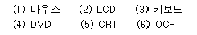
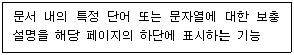
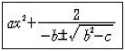
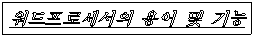
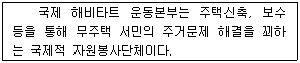
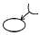
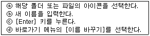
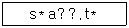

워드프로세서-3급(폐지) (2010-03-07 기출문제)
1과목: 워드프로세서 용어 및 기능
1. 문서작성 시 자주 사용하는 어휘를 약어로 등록한 후 필요시 약어를 호출하여 손쉽게 입력하는 기능은?
- 머지(Merge)
- 검색(Search)
- 색인(Index)
- 상용구(Glossary)
(정답률: 88%)

2. 다음 중 용지의 규격이 가장 작은 것은?
- A4
- A3
- B4
- B5
(정답률: 68%)
3. 다음 중 치환(Replace) 기능에 대한 설명으로 옳지 않은 것은?
- 한글, 특수문자, 영어, 한자 등을 바꿀 수 있다.
- 일정한 위치를 기준으로 재배치를 할 수 있다.
- 문서에서 특정 단어를 검색하여 다른 단어로 바꾸는 것을 의미한다.
- 글꼴의 크기, 모양, 속성도 바꿀 수 있다.
(정답률: 60%)
4. 다음 중 화면을 위, 아래나 오른쪽, 왼쪽으로 이동시켜 보이지 않는 문서의 내용을 보이게 하는 기능을 가진 것은?
- 상황 표시줄(Status Line)
- 이동 막대(Scroll Bar)
- 메뉴 표시줄(Menu Bar)
- 눈금자(Ruler)
(정답률: 80%)
5. 다음 중 문서의 특정부분을 현재 위치에서 제거하고 문서의 다른 곳으로 옮기는데(Move) 사용되는 기능과 거리가 먼 것은?
- 복사하기
- 오려두기
- 영역지정
- 붙이기
(정답률: 50%)
6. 다음 중에서 단독으로 사용하지 않고 다른 키와 함께 사용하여 특수한 기능을 수행하는 조합 키는?
- [Delete]
- [Shift]
- [Insert]
- [Esc]
(정답률: 82%)
7. 다음 중 빛을 이용하는 장치가 아닌 것은?
- OCR
- CD-ROM
- MICR
- 스캐너(Scanner)
(정답률: 61%)
8. 다음 중 입력 장치로 사용되는 것을 바르게 묶은 것은?

- (1), (3), (6)
- (2), (4), (5)
- (3), (5), (6)
- (1), (2), (4)
(정답률: 85%)
9. 다음에서 설명하는 워드프로세서의 기능은?

- 미주
- 각주
- 꼬리말
- 캡션
(정답률: 70%)
10. 다음 중 줄의 끝에 위치한 영어 단어 등이 길어서 다음 줄까지 이어질 때 자동으로 다음 줄로 넘겨 단어의 파악이 쉽도록 하는 기능은?
- 워드랩
- 영문 균등
- 하이픈
- 문단 조합
(정답률: 65%)
11. 다음 용어는 화면 출력장치와 관계된 것이다. 이들 중 그 성격이 다른 것은?
- 해상도
- 픽셀(Pixel)
- 피치(Pitch)
- 색 품질
(정답률: 55%)
12. 다음 보기와 같은 복잡한 수학식이나 화학식을 작성하고 편집할 때 사용하는 기능은?

- 매크로(Macro)
- 목차 만들기
- 수식 편집기
- 스타일(Style)
(정답률: 89%)
13. 다음 중 KS X 1001 완성형 한글 코드에 대한 설명으로 옳지 않은 것은?
- 정보 교환용으로 사용한다.
- 영문, 숫자는 1Byte로 나타낸다.
- 글자마다 코드를 부여하여 사용한다.
- 모든 한글을 표현할 수 있다.
(정답률: 48%)
14. 다음 보기에 사용된 글자속성이 아닌 것은?

- 기울임
- 밑줄
- 외곽선(윤곽선)
- 음영
(정답률: 82%)
15. 다음 보기의 내용과 같이 문단의 첫째 줄 맨 앞부분을 안으로 들어가게 하는 기능을 무엇이라고 하는가?

- 여백(Margin)
- 정렬(Align)
- 들여쓰기(Indent)
- 내어쓰기(Outdent)
(정답률: 82%)
16. 다음 중 스풀(Spool)에 대한 설명으로 거리가 먼 것은?
- 컴퓨터 전체의 처리효율을 높여준다.
- 중앙처리장치에 비해 늦은 출력 장치의 속도를 해결하기 위한 기능이다.
- 출력 내용을 보조기억장치에 저장한 다음 내용을 인쇄하는 것이다.
- 인쇄가 끝나기 전에는 다른 작업을 할 수 없는 단점이 있다.
(정답률: 64%)
17. 다음 중 글꼴의 외곽선 정보를 사용하지 않아 확대하면 테두리에 계단 현상이 발생하여 거칠게 보여 지는 글꼴 구현 방식은?
- 벡터(Vector)
- 트루 타입(True Type)
- 비트맵(Bitmap)
- 오픈 타입(Open Type)
(정답률: 79%)
18. 다음 중 디스켓이나 하드디스크에 저장된 문서를 주기억장치로 읽어 오는 것을 무엇이라고 하는가?
- 로드(Load)
- 커닝(Kerning)
- 백업(Backup)
- 버퍼링(Buffering)
(정답률: 70%)
19. 다음 중 실제적으로 문서량의 크기가 증가하는 교정기호는?
(정답률: 68%)
20. 다음 중에서 교정부호의 의미가 올바르게 설명된 것은?
- : 자리 바꾸기
- : 줄간격 띄우기
- : 내어 쓰기

: 삭제하기
(정답률: 75%)
2과목: PC 운영 체제
21. 다음은 한글 Windows XP에서 폴더나 아이콘의 이름을 변경하는 순서이다. 순서가 올바르게 나열된 것은?

- ⓐ-ⓑ-ⓒ-ⓓ
- ⓐ-ⓓ-ⓑ-ⓒ
- ⓓ-ⓐ-ⓑ-ⓒ
- ⓓ-ⓑ-ⓒ-ⓐ
(정답률: 81%)
22. 다음 중 한글 Windows XP에서 [제어판]에 있는 [디스플레이]를 이용하여 설정할 수 있는 것으로 옳지 않은 것은?
- 화면 보호기
- 작업 표시줄 위치
- 화면의 해상도
- 화면 배색
(정답률: 70%)
23. 다음 중 한글 Windows XP에서 [작업 표시줄]에 있는 [시작] 단추의 바로가기 메뉴에 표시되는 항목으로 옳지 않은 것은?
- 열기
- 탐색
- 검색
- 실행
(정답률: 54%)
24. 다음 중 한글 Windows XP의 [검색 결과] 창에서 검색 조건이 다음과 같을 경우에 검색할 수 있는 파일로 옳지 않은 것은?

- start.txt
- startup.txt
- start.tmp
- spark.txt
(정답률: 60%)
25. 다음 중 한글 Windows XP의 바탕화면에서 마우스의 오른쪽 단추를 눌렀을 때 나타나는 바로가기 메뉴 항목으로 옳지 않은 것은?
- 아이콘 정렬 순서
- 새로 고침
- 탐색
- 속성
(정답률: 54%)
26. 다음 중 한글 Windows XP의 [탐색기] 창에서 표시된 모든 파일과 폴더를 한번에 모두 선택할 때 사용하는 바로가기 키로 옳은 것은?
- [Ctrl]+[A]
- [Ctrl]+[C]
- [Alt]+[A]
- [Alt]+[C]
(정답률: 76%)
27. 다음 중 한글 Windows XP의 바탕화면에 사용 중이거나 열려 있는 창이 없을 때 [시스템 종료] 대화상자를 표시하기 위한 바로가기 키로 옳은 것은?
- [Alt]+[Enter]
- [Alt]+[F4]
- [Ctrl]+[Shift]+[Tab]
- [Ctrl]+[Alt]+[Delete]
(정답률: 73%)
28. 다음 중 한글 Windows XP에서 제공되는 기능으로 옳지 않은 것은?
- 자동 감지 설치(Plug and Play)
- 그래픽 사용자 인터페이스
- NTFS 파일 시스템
- 완전한 64비트 데이터 처리
(정답률: 62%)
29. 다음 중 한글 Windows XP의 [Windows 탐색기] 창에서 파일이나 폴더의 이름, 크기, 종류, 수정한 날짜 등을 표시하기 위해 사용하는 [보기] 메뉴의 하위 선택 항목으로 옳은 것은?
- 미리 보기
- 작은 아이콘
- 간단히
- 자세히
(정답률: 69%)
30. 다음 중 한글 Windows XP에서 하드디스크인 C 드라이브의 남은 용량을 확인하기 위한 방법으로 옳은 것은?
- [제어판]에 있는 [시스템]을 마우스로 클릭하여 선택한다.
- [내 컴퓨터] 창에 있는 C 드라이브의 바로가기 메뉴에서 [속성]을 선택한다.
- [내 컴퓨터] 창에서 [편집] 메뉴에 있는 [모두 선택]을 선택한다.
- 바탕화면의 바로가기 메뉴에서 [속성]을 마우스로 클릭한다.
(정답률: 69%)
31. 다음 중 한글 Windows XP에서 [탐색기] 창의 왼쪽에 있는 폴더 탐색 창에 관한 설명으로 옳지 않은 것은?
- 해당 폴더를 선택하면 오른쪽에 그 폴더의 내용이 나타난다.
- 특정 폴더 앞에 있는 [-]를 누르면 하위 폴더가 나타난다.
- 한 쪽 창의 크기를 변경하려면 양쪽을 구분해 주는 경계선을 마우스를 사용하여 끌어준다.
- 폴더 열기와 하위 폴더 표시를 빨리 수행하려면 창 왼쪽에서 해당 폴더를 한 번 클릭한다.
(정답률: 61%)
32. 다음 중 한글 Windows XP에서 마우스 포인터 모양에 관한 설명으로 옳지 않은 것은?
- : 백그라운드에서 작업 중
- : 이동
- : 작업 중
- : 연결 선택
(정답률: 79%)
33. 다음 중 한글 Windows XP의 [제어판]에 있는 [프로그램 추가/제거]를 이용하여 수행할 수 있는 작업으로 옳은 것은?
- 시동 디스크를 작성할 수 있다.
- 이미 설치되어 있는 프로그램을 제거할 수 있다.
- [Windows 구성 요소 추가/제거]를 이용하여 [휴지통]을 삭제할 수 있다.
- 파일 시스템을 변경할 수 있다.
(정답률: 55%)
34. 다음 중 한글 Windows XP에서 제공하는 글꼴 스타일로 옳지 않은 것은?
- 기울임꼴
- 굵게
- 굵은 기울임꼴
- 밑줄
(정답률: 46%)
35. 다음 중 한글 Windows XP에서 기본 프린터의 인쇄 관리자창에 표시되는 내용으로 옳지 않은 것은?
- 인쇄 문서의 이름
- 인쇄 문서의 상태
- 인쇄 문서의 소유자
- 인쇄 문서를 수정한 날짜
(정답률: 42%)
36. 다음 중 한글 Windows XP에 설치된 프린터의 [속성] 창에서 설정할 수 있는 것으로 옳지 않은 것은?
- 인쇄문서의 일시 중지
- 용지 크기
- 스풀의 사용 유무
- 프린터의 공유
(정답률: 44%)
37. 다음 중 한글 Windows XP에서 폴더 창의 숨김 파일이나 폴더를 표시하기 위한 메뉴의 순서로 옳은 것은?
- [편집]-[숨김 보기]
- [보기]-[폴더]
- [즐겨찾기]-[보기]
- [도구]-[폴더 옵션]
(정답률: 46%)
38. 다음 중 한글 Windows XP에서 파일 이름으로 사용할 수 있는 특수 문자로 옳은 것은?
- :
- ?
- #
- *
(정답률: 62%)
39. 다음 중 한글 Windows XP의 [검색 결과] 창에서 사용할 수 있는 범주별로 결과 정렬에 관한 옵션 항목으로 옳지 않은 것은?
- 만든이
- 이름
- 수정한 날짜
- 크기
(정답률: 65%)
40. 다음 중 한글 Windows XP의 [Windows 탐색기] 창에서 도구 단추와 같은 역할을 하는 바로가기 키로 옳은 것은?
- [Back Space]
- [F5]
- [Esc]
- [Alt]
(정답률: 73%)